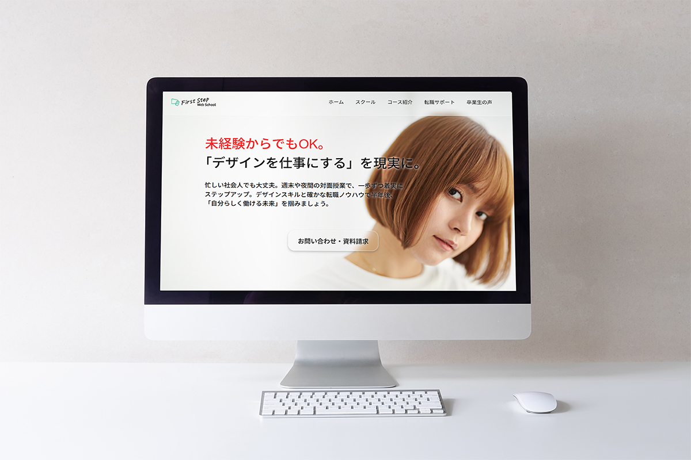

デザインスクール HP
授業課題 / Web Site

About
架空のデザインスクールのWebサイトを制作しました。
Web制作初心者や、Web業界への就職・転職を考えている社会人をターゲットに設定し、
「Web制作って楽しそう」と興味を持ってもらえるデザインを目指しました。
デザインでは、淡いグラデーションやグラスモーフィズム(ガラス風表現)を取り入れ、親しみやすさを演出しながらも、
子どもっぽくなりすぎないよう、明るく洗練された印象に仕上げています。
さらに、余白や丸みのあるデザインで統一し、柔らかい印象に仕上げ
「見やすさ」と「デザイン性」が両立するデザインを意識しました。
機能面では、情報量の多いスクールサイトでも内容を直感的に理解できるよう、
コース紹介はカード型、5つのサポートは円形のレイアウトで整理し
視認性を意識した情報設計を行いました。
また、サイトのゴールである問い合わせにつなげるため、
トップページから問い合わせページへスムーズに移動できる導線を設計。
問い合わせページでは、他のページとは異なる配色でフォームを強調し、
ユーザーの視線を集めて行動につなげられるよう工夫しました。
Tools
Photoshop / Figma / HTML / CSS
Schedule
約54時間
 ← Worksへ戻る
← Worksへ戻る